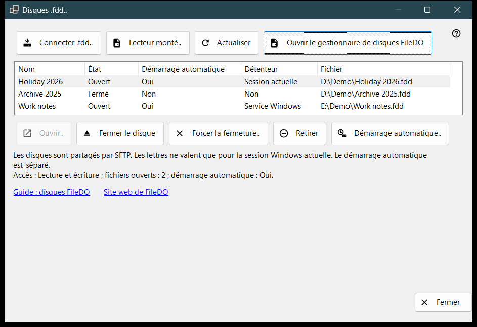
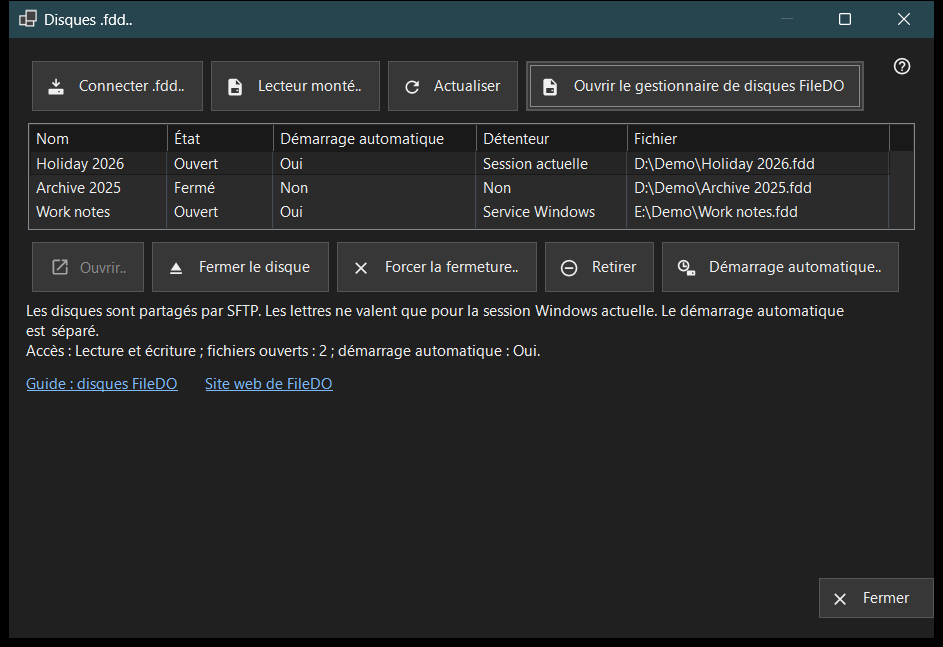

Disques .fdd
Objectif
Liste les disques .fdd de FileDO que ce PC partage en SFTP et regroupe les commandes courantes : connecter un disque, l'ouvrir ou le fermer, arrêter son partage et décider s'il s'ouvre avec le serveur. Elle s'ouvre depuis l'élément «Disques .fdd..» du menu d'ajout de la fenêtre principale de Share Manager.


Dans cet ordre
- Cliquez sur «Connecter .fdd..», choisissez le fichier .fdd et confirmez la boîte de dialogue des options.
- Sélectionnez le disque dans la liste ; la ligne sous la liste indique son mode d'accès, ses fichiers ouverts et son démarrage automatique.
- Utilisez «Ouvrir..» pour un disque fermé, «Fermer le disque» pour un disque ouvert ou «Démarrage automatique..» pour changer l'ouverture automatique.
- Cliquez sur «Actualiser» pour relire l'état ; la fenêtre le relit aussi d'elle-même toutes les 10 secondes.
- Cliquez sur «Fermer» pour quitter.
Les éléments
Liste des disques
Chaque ligne est un disque partagé : Nom, État (Ouvert, Ouverture, Fermeture, Fermé, Verrouillé, Erreur ou Inconnu), Démarrage automatique, Détenteur et le chemin du fichier .fdd (colonne «Fichier»). Détenteur indique qui garde le disque ouvert : Service Windows, Session actuelle ou Non quand personne ne le fait. Survolez une ligne pour voir son chemin complet. La première ligne est sélectionnée d'elle-même, et la ligne sous la liste indique son accès (Lecture seule ou Lecture et écriture), le nombre de fichiers ouverts et son démarrage automatique. Quand le service de partage ne peut pas partager de disques, la liste et les boutons de commande sont masqués et cette ligne en donne la raison ; si FileDO lui-même a monté le disque, le lien «Ouvrir le gestionnaire de disques FileDO» apparaît.
Connecter .fdd..
Choisissez un fichier .fdd et enregistrez-le pour le partage. La boîte de dialogue des options demande un Nom, le choix «Lecture seule» et «Ouvrir après l'enregistrement» (cochée par défaut). Pour un disque chiffré, elle demande aussi le Mot de passe, et vous pouvez attribuer au disque une lettre de lecteur ou garder «Sans lettre - partage seul». Une lettre ne dure que pour la session Windows en cours. Si le disque est encore ouvert dans FileDO, enregistrez-le et fermez-le d'abord là-bas. Si l'enregistrement réussit mais que le disque ne s'ouvre pas, un message l'indique et le disque reste dans la liste comme fermé.
Lecteur monté..
Choisissez un lecteur prêt de ce PC, par exemple un disque que FileDO a déjà monté. La fenêtre se ferme et la fenêtre principale poursuit avec son étape habituelle d'ajout de dossier pour ce lecteur.
Ouvrir, fermer et retirer
«Ouvrir..» rouvre un disque fermé, verrouillé ou en erreur et demande le mot de passe d'un disque chiffré. «Fermer le disque» n'est disponible que pour un disque ouvert ; les clients perdent temporairement l'accès et les fichiers ouverts disposent de 30 secondes au maximum pour se fermer. «Forcer la fermeture..» déconnecte aussitôt les fichiers ouverts, si bien que des données non enregistrées peuvent être perdues. «Retirer» arrête le partage : le disque est fermé, son réglage de démarrage automatique et la clé enregistrée sont supprimés, et le fichier .fdd est conservé. Chacune de ces actions demande d'abord une confirmation, avec Annuler comme réponse par défaut.
Démarrage automatique
La colonne «Démarrage automatique» affiche Oui ou Non pour chaque disque sans qu'il soit nécessaire de le sélectionner. Un tiret (-) signifie que le service de partage ne prend pas en charge le démarrage automatique ; «Démarrage automatique..» est alors désactivé. «Démarrage automatique..» bascule le réglage après une confirmation : en l'activant, le disque s'ouvre avec le serveur et le mot de passe d'un disque chiffré est enregistré dans le magasin protégé de Windows sur ce PC ; en le désactivant, cette clé enregistrée est supprimée. Le réglage est indépendant de l'État : un disque fermé ou en erreur peut donc avoir le démarrage automatique activé. Les lignes FileDO de la liste de la fenêtre principale l'affichent aussi.
Guide, site web et Fermer
«Guide : disques FileDO» et «Site web de FileDO» ouvrent le guide et le site de FileDO, le programme d'où viennent les disques. Si le gestionnaire de disques FileDO est introuvable sur ce PC, la fenêtre indique d'installer FileDO depuis son site web. «Fermer» quitte la fenêtre ; elle ne peut pas être fermée tant qu'une opération sur un disque est en cours.
Paramètres du gestionnaire · Paramètres de partage SFTP · Paramètres du serveur d’échange